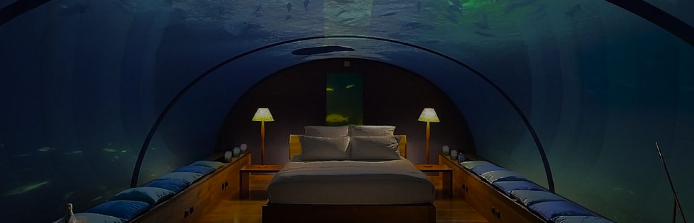
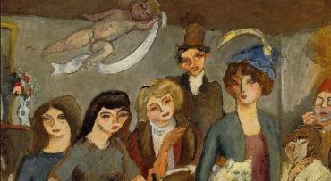
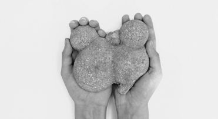
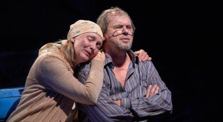

Underwater hotel
As is well known, Dubai is a city of contrasts. This metropolis, built and financed by oil wealth, is capable of bringing even the most revolutionary and fantastic architectural dreams to life
As is well known, Dubai is a city of contrasts. This metropolis, built and financed by oil wealth, is capable of bringing even the most revolutionary and fantastic architectural dreams to life


From September 29 to November 29, the Pushkin State Museum of Fine Arts is hosting the exhibition “The Roaring Years of Montparnasse”

Now that the world is wide open to humanity and its pursuit of knowledge, interest in popular science literature has grown significantly

Reporters from Culture Observer had the opportunity to attend the premiere of the play Oddballs and Bores at the Sphere Theatre
By purchasing a season ticket for 2020, you will save 50% on all performances
Only season ticket holders will have the opportunity to sit closer to the stage
After the performance, you will have the opportunity to meet the actors and get their autographs